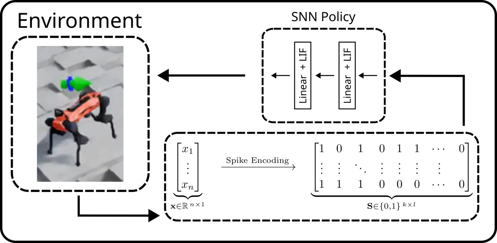
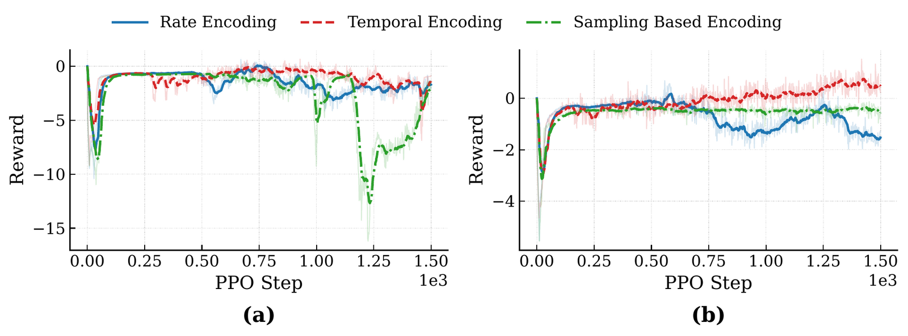

Spiking Actor-Critic for Quadruped Locomotion: Spike Encoding Schemes Compared
The 23rd International SoC Conference (ISOCC 2026) · ETRI Best Paper Award


Summary
Spiking neural networks promise energy-efficient, event-driven control on neuromorphic chips. A legged robot's state, however, is a vector of real numbers, so it has to be turned into spikes first. We train a fully spiking actor-critic to make an ANYmal-D walk, and ask how much that encoding step matters.
Method
Task. ANYmal-D velocity tracking in Isaac Lab, on flat and rough terrain. The robot observes a 235-dimensional proprioceptive state (velocities, gravity, commands, joint states, previous action, height scan) and outputs 12 joint-position targets.
Policy. Three LIF layers (512, 256 and 128 neurons). Each observation is unrolled over 20 spiking timesteps, and a leaky-integrator readout produces the action. The critic uses the same spiking architecture, so both actor and critic stay entirely in the spiking domain. Training uses PPO with 4096 parallel environments on one GPU.
Three encodings of each normalized feature x ∈ [0, 1]:
- Rate: a deterministic accumulator that fires with average rate x.
- Temporal: a single spike, which comes earlier the larger x is (time-to-first-spike).
- Sampling: at every step, a spike with probability x (Bernoulli).
Results
The encoder turns out to be a decisive design choice, and no single scheme wins everywhere. On flat terrain, rate encoding learns fastest and most stably. On rough terrain the ordering flips and sampling encoding learns best: its input noise hurts on easy ground but seems to aid exploration when the terrain itself adds variability.

| Terrain | Encoding | Success (%) | Reward | Firing rate |
|---|---|---|---|---|
| Flat | Rate | 77.98 | 4.45 | 0.083 |
| Flat | Temporal | 0.00 | −1.04 | 0.304 |
| Flat | Sampling | 0.27 | −1.18 | 0.057 |
| Rough | Rate | 1.42 | −0.50 | 0.070 |
| Rough | Temporal | 10.40 | −1.77 | 0.130 |
| Rough | Sampling | 20.50 | 1.70 | 0.066 |
Deterministic evaluation over 128 environments. The best flat-terrain policy fires less than 9% of the time (sparsity > 0.91). It tracks commands accurately with very little neural activity, which is exactly the regime that neuromorphic hardware rewards.